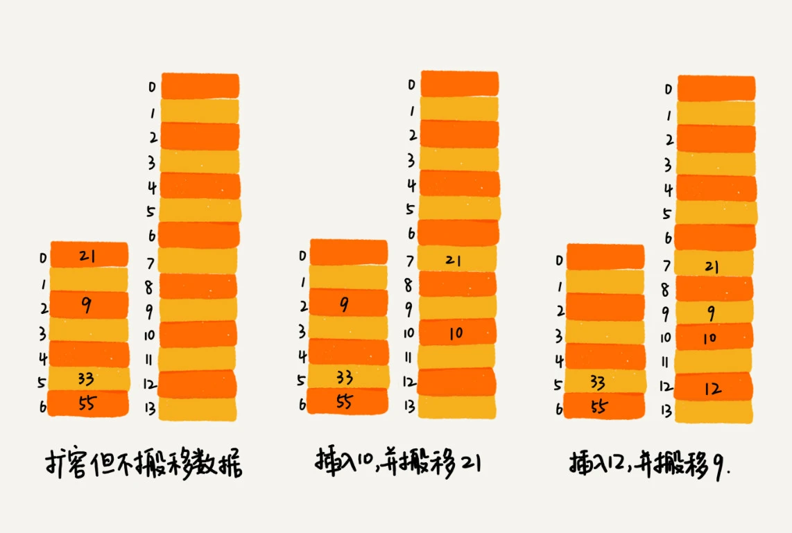

接着来学一下散列表（中）。
散列表的查询效率并不能笼统地说成是\(O(1)\)。它跟散列函数、装载因子、散列冲突等都有关系。如果散列函数设计地不好，或者装载因子过高，都可能导致散列冲突的概率升高，查询效率下降。
在极端情况下，有些恶意的攻击者，还有可能通过精心构造的数据，使得所有的数据经过散列函数之后，都散列到同一个槽里。如果使用的是基于链表的冲突解决办法，那么，散列表就会退化为链表，查询的时间复杂度就会从\(O(1)\)急剧退化为\(O(n)\)。
如果散列表中有10万个数据，退化后的散列表查询的效率就下降了10万倍。更直接点，如果之前运行100次查询只需要0.1秒，那现在就需要1万秒。这样就有可能因为查询操作消耗大量CPU或者线程资源，导致系统无法响应其他请求，从而达到服务攻击（DoS）的目的。这也是散列表碰撞攻击的基本原理。
如何设计散列函数
首先，散列函数的设计不能太复杂。过于复杂的散列函数，势必会消耗很多计算时间，也间接地影响到散列表的性能。其次，散列函数生成的值要尽可能随机并且均匀分布，这样才能避免或者最小化散列冲突，而且即使出现冲突，散列到每个槽里的数据也会比较平均，不会出现某个槽内数据特别多的情况。
第一个例子就是学生运动会的例子，通过分析参赛编号的特征，把编号中的后两位做为散列值。类似的散列函数处理手机号码，取手机号的后四位作为散列值。这种设计方法一般叫做“数据分析法”。
散列函数的设计方法还有很多，比如直接寻址法，平方取中法、折叠法、随机数法等。
装载因子过大
装载因子越大，说明散列表中的元素越多，空闲位置越少，散列冲突的概率就越大。
对于动态散列表来说，数据集合是频繁变动的，事先无法预估将要加入的数据个数，所以也无法事先申请一个足够大的散列表。随着数据慢慢加入，装载因子会慢慢变大。当装载因子大到一定程度之后，散列冲突就会变得不可接受。
针对散列表，当装载因子过大时，可以进行动态扩容，重新申请一个更大的散列表，将数据搬移到这个新散列表中。假设每次扩容都申请一个原来散列表大小两倍的空间。如果原来散列表的的装载因子是0.8，那经过扩容之后，新散列表的装载因子就下降为原来的一半，变成了0.4。
针对数据的扩容，数据搬移比较简单。但是针对散列表的扩容，数据搬移操作要复杂很多。因为散列表的大小变了，数据的存储位置也变了，所以需要通过散列函数重新计算每个数据的存储位置。
插入一个数据，最好情况下，不需要扩容，最好时间复杂度为\(O(1)\)。最坏情况下，散列表装载因子过高，启动扩容，需要重新申请内存空间，重新计算哈希位置，并且搬移数据，所以时间复杂度为\(O(n)\)。通过摊还分析法，均摊情况下，时间复杂度接近最好情况，就是\(O(1)\)。
实际上，对于动态散列表，随着数据的删除，散列表中的数据会越来越少，空闲空间会越来越多。如果对空间消耗非常敏感，可以在装载因子小于某个值之后，启动动态缩容。反之则不需要。
装载因子阈值设置需要得当。如果太大，会导致冲突过多；如果过小，会导致内存浪费严重。需要权衡时间、空间复杂度。如果内存空间不紧张，对执行效率要求很高，可以降低负载因子的阈值；反之可以增大装载因子的阈值。
如何避免低效扩容
大部分情况下，动态扩容的散列表插入一个数据都很快，但是在特殊情况下，当装载因子已经达到阈值，需要先进行扩容，再插入数据。这个时候，插入数据就会变得很慢，甚至无法接受。
这个时候，“一次性”扩容的机制就不合适了。为了解决一次性扩容耗时过多的情况，可以将扩容操作穿插在插入操作的过程中，分批完成。
当有新数据要插入时，将新数据插入新散列表中，并且从老的散列表中拿出一个数据放入到新散列表。每次插入一个数据到散列表，都重复上面的过程。经过多次插入操作之后，老的散列表中的数据就一点一点全部搬移到新散列表中。

对于查询操作，为了兼容新、老散列表中的数据，先从散列表中查找，如果没找到，再去老的散列表中查找。
通过这样均摊的方法，将一次性扩容的代价，均摊到多次插入操作中，就避免了一次性扩容耗时过多的情况。这种实现方式，任何情况下，插入一个数据的时间复杂度都是\(O(1)\)。
如何选择冲突解决方法
开放寻址法
优点：散列表中的数据都存储在数组中，可以有效地利用CPU缓存加快查询速度。而且，序列化起来比较简单
缺点：删除数据的时候比较麻烦，需要特殊标记已经删除掉的数据。而且，在开放寻址法中，所有的数据都存储在一个数组中，比起链表来说，冲突的代价更高。
总结：当数据量比较小、装载因子小的时候，适合采用开放寻址法。这也是
Java中ThreadLocalMap使用开放寻址法解决散列冲突的原因。链表法
优点：链表法对内存的利用率比开放寻址法更高。其次，链表法对大装载因子的容忍度更高，只要散列函数的值随机均匀，即便装载因子变成10，也就是链表的长度变长了而已，虽然查找效率有所下降，但是比顺序查找还是快很多。
缺点：链表要存储指针，是比较消耗内存的。其次，链表中的结点时零散分布在内存中，是不连续的，对CPU缓存不友好。
总结：基于链表的散列冲突处理方法比较适合存储大对象，大数据量的散列表，而且，比起开放寻址法，更加灵活，支持更多的优化策略，比如用红黑树代替链表。
工业级散列表举例分析
以Java中的HashMap这样的工业级散列表举例说明。
初始大小
HashMap默认的初始大小是16。如果事先直到大概的数据量有多大，可以通过修改默认初始大小，减少动态扩容的次数，这样会大大提高HashMap的性能。
装载因子和动态扩容
最大装载因子默认是0.75，当HashMap中元素个数超过0.75*capacity（capacity表示散列表的容量）的时候，就会启动扩容，每次扩容都会扩容为原来的两倍大小。
散列冲突解决办法
HashMap底层采用链表法来解决冲突。在JDK1.8版本中，对HashMap做进一步优化，引入了红黑树。当链表长度太长（默认超过8）时，链表就转换为红黑树，可以利用红黑树快速增删改查的特性，提高HashMap的性能。当红黑树结点个数少于8个的时候，又会将红黑树转换为链表。
评论区中有大佬指出，当HashMap中结点少于6时，会由红黑树变成链表，当HashMap中结点数为6时，链表的平均查找6/2=3。当HashMap中结点多于8时，会由链表变成红黑树，红黑树的平均查找为\(log_28=3\)，如果继续使用链表，平均查找长度8/2=4，这才有转换为树的必要。还有一个问题就是6和8的选择，6和8之间有一个7可以有效防止链表和红黑树频繁转换。假设一下如果设计成HashMap中数据超过8，由链表转换成红黑树；HashMap中数据少于8，由红黑树转换成链表。若一个HashMap不停地插入、删除，HashMap中的个数不停地在8左右徘徊，就会频繁发生链表转红黑树，红黑树转链表，效率会非常低。
这里自己翻了一下，有三个问题，这里记录一下
1.为什么要转红黑树？
因为查找元素，红黑树的时间复杂度为\(O(logn)\)，而链表的时间复杂度是\(O(n)\)
2.为什么不直接使用红黑树，而是要先使用链表，链表结点大于8后，再转为红黑树？
这个问题，在HashMap源码中的174行注释中写到，Because TreeNodes are about twice the size of regular nodes, we use them only when bins contain enough nodes to warrant use (see TREEIFY_THRESHOLD)。意思就是因为树节点是链表结点大小的两倍，所以只有在容器中包含足够的结点保证才会使用它。尽管红黑树的查找效率更高，但是在结点数比较小的时候，对于红黑树来说内存的劣势会超过查找等操作的优势，自然使用链表更好。
3.为什么链表结点大于8时转为红黑树，而不是9、10？
这一点也是源码中179行注释中写到，源码的贡献者进行大量实验发现，hash碰撞发生8次的概率已经降低到了0.00000006，再往后调整并没有很大意义。理想情况下，在随机哈希码下，哈希表中结点的频率遵循泊松分布。
散列函数
散列函数的设计并不复杂，追求的是简单高效、分布均匀。
1 | int hash(Object key) { |
hashCode()返回的是Java对象的hash code。String类型的对象的hashCode()如下：
1 |
|
结合评论区的讨论，这里记录一下。
第一步，根据key通过hashCode()得到hash值，具体代码实现int h = key.hashCode();
第二步，将得到的hash值映射到数组中的位置，具体代码实现(h ^ (h >>> 16)) & (capacity - 1)。
然后把评论区原答案也放到这里吧。JDK hashMap源码，hash表中数组位置的计算分两步：
1.计算hash值
1 | hash(Object key) { |
这一步有一种说法，叫它扰动函数，为什么要右移16位再与本身异或呢？
- 首先
hashCode()返回值int最高是32位，如果直接拿hashCode()返回值作为下标，大概40亿（2的32次幂=4294967296）的映射空间，只要哈希函数映射的比较均匀松散，一般是很难出现碰撞的。问题是一个40亿长度的数组，内存是放不下的。 - 所以，用自己的高半区和底半区做异或，混合原始哈希码的高位和低位，关键是以此来加大低位的随机性。为后续计算
index截取低位，保证低位的随机性。 - 这样设计保证了对象的
hashCode的32位值只要有一位发生改变，整个hash()返回值就会改变，高位的变化会反应到低位里，保证了hash值的随机性。
2.在插入或者查找的时候，计算key被映射到桶的位置：
1 | int index = hash(key) & (capacity - 1) |
hash()扰动函数计算的值和hash表当前的容量减一，做按位与运算。
这一步，为什么要减一，又为什么要按位与运算？因为A % B = A & (B-1)，当B是2的指数时，等式成立。本质上使用了除留余数法，保证了index的位置分布均匀。
为什么HashMap的数组长度必须是2的整次幂？数组长度是2的整次幂时，（数组长度-1）正好相当于一个“低位掩码”，“与”操作的结果就是散列值的高位全部归零，只保留低位值，用来做数组下标来访问。
解答开篇
如何设计一个工业级的散列函数？
- 工业级的散列表应该具有哪些特性？
- 快速地查询、插入、删除操作
- 内存占用合理，不能浪费过多的内存空间
- 性能稳定，极端情况下，散列表的性能也不会退化到无法接受的情况
- 如何实现一个这样的散列表？
- 设计一个合适的散列函数
- 定义装载因子阈值，并且设计动态扩容策略
- 选择合适的散列冲突解决办法
此外，还需要结合具体的业务场景、具体的业务数据来具体分析。
课后思考
在你熟悉的编程语言中，哪些数据类型底层是基于散列表实现的？散列函数是如何设计的？散列冲突是通过哪种方法解决的？是否支持动态扩容呢？
Python中数据类型dict底层是基于散列表来实现的。通过类似开放寻址法来解决散列冲突的。同时支持动态扩容。
本篇文章中其实有很多知识点没搞清楚，比如说Java中的hashCode()到底是怎么实现的？看了下java中的hashCode是怎么来的，表示没搞清楚。还有Python中的hash()是怎么实现的？散列函数是如何设计的？装载因子等于多少的时候会自动扩容，扩容大小是多少？Python-dict源码地址，表示没看懂。
参考链接：